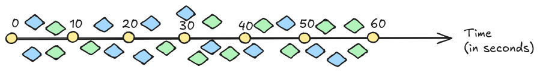

Optimizing Stream Queries by Reusing Aggregated Results
Kush Bisen
Optimizing Stream Queries by Reusing Aggregated Results
Kush Bisen
UGent - imec
RDF Stream Processing

Windows in RDF Stream Processing

RSP-Query Language (RSPQL)
- RSP-QL is an extension of SPARQL
-
It allows for the specification of time windows and stream processing
semantics.
Querying Average Temperature
PREFIX : <http://rsp.js/>
REGISTER RStream
SELECT (AVG(?temperature) AS ?temp)
FROM NAMED WINDOW ex:w1 ON STREAM ex:stream [RANGE 30min STEP 15min]
WHERE {
WINDOW ex:w1 {
?sensor :hasTemperature ?temperature .
}
}
Reusing Stream Queries
In distributed and decentralized systems,
Different RSP Agents may have different queries running over the same or different streams.
The results of these queries can be reused to optimize the execution of other queries.
Use Case

Finding Similarities in Queries
Query containment
Results of one query are always a subset of the results for another query
Query Isomorphism
Queries are structurally identical, and will produce the same results.
Finding Similarities in Queries
Given a set of RSP Agents and their queries, if a parent query is introduced to the system.
Query Containment relationships between the parent query and the child queries are used to
determine the reusability of the child query results.
Joining Query Results

Combining Results from different Window Semantics

Combining Results from different Window Semantics

Approximating the Results
- Parent Query Results can be approximated using the child queries.
- Aggregation Functions are a loss function
- Approximation can be far away from the ground truth
- Not dependable for critical use cases
So to get dependable correct results. We should just query the original data source?
Chunking Strategies as a Solution

Chunking Strategies as a Solution

What about Aggregation Functions?
New Query can be registered into the RSP Agent with the chunked window semantics.
The query registered can have the same aggregation function as the parent query.
What about Aggregation Functions?
| SPARQL 1.1 Functions |
Derivable Aggregation |
| COUNT, SUM |
AVG |
| AVG, COUNT |
SUM |
| MIN, MAX |
RANGE (compute seperately, not SPARQL 1.1) |
Including Extension Functions?
| SPARQL Functions |
Derivable Aggregation |
| COUNT, SUM |
AVG |
| AVG, COUNT |
SUM |
| MIN, MAX |
RANGE (compute seperately) |
| SUM, COUNT, SUM OF SQUARES, SQRT |
VAR, STDEV |
| COUNT(DISTINCT), COUNT(*) |
COUNT_DUPLICATES |
Streaming Query Hive
Streaming Query Hive is a Microservice which combines Multiple Streaming Queries to solve for a single parent query.
It is currently in development.